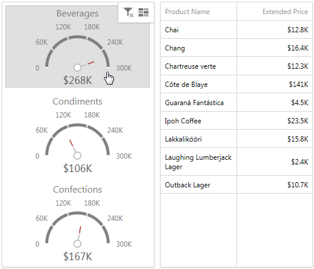
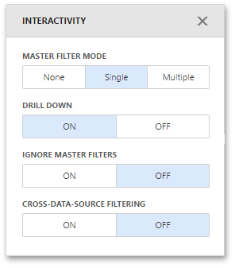
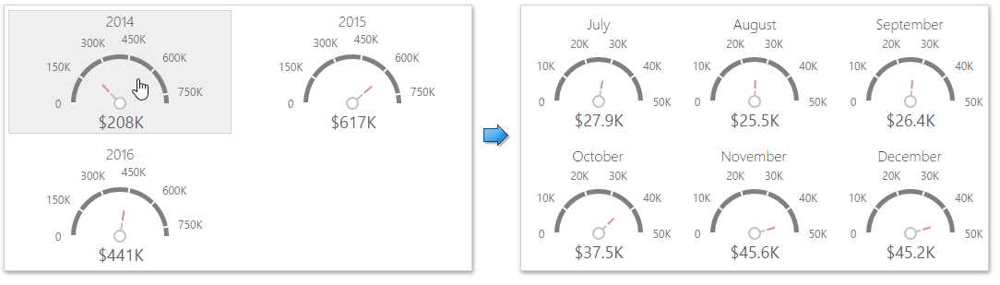

Interactivity
To enable interaction between the Gauge and other dashboard items, you can use the interactivity features, as Master Filtering and Drill-Down.
Master Filtering
You can use the Gauge dashboard item as a filter for other dashboard items. To learn more about filtering concepts common to all dashboard items, see the Master Filtering topic.
When Master Filtering is enabled, you can click a gauge(s) to make other dashboard items only display data related to the selected gauge(s).

To enable Master Filtering, go to the Gauge's Interactivity menu and select the required Master Filtering mode.

To reset filtering, use the Clear Master Filter button (the  icon) in the Gauge's caption.
icon) in the Gauge's caption.
Drill-Down
The built-in drill-down capability allows you to change the detail level of data displayed in dashboard items on the fly. To learn more about drill-down concepts common to all dashboard items, see the Drill-Down topic.
When drill-down is enabled, you can click a gauge to view the details.

Drill-down requires that the Series section contains several dimensions at the top, from the least detailed to the most detailed dimension.

Note
In OLAP mode, you can perform drill-down for either a hierarchy data item or several dimension attributes.
To enable Drill-Down, go to the Gauge's Interactivity menu and turn the Drill-Down option on.
To return to the previous detail level, click the Drill Up button (the  icon) in the Gauge's caption.
icon) in the Gauge's caption.